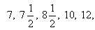
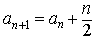
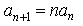
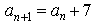
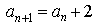
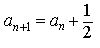

Item: tRecursiveRuleOtherRecursive3a
Stem:
Let a1, a2, a3,
...,
an, ... be a sequence of positive
numbers. The first five terms of the sequence are given below.

. . .
Select the correct rule for finding the (n+1)th term from the nth term.
Options:





Key:
- Observable: 1.
Score: 1;
Evidence Value: 1.
-
Student:Great work! The expression you selected is correct.
-
Teacher:The student got this item correct.
- Observable: 2.
Score: 0;
Evidence Value: 0.
-
Student:Sorry, that's not right. Think about the following example: The first term is 7, so when n = 1, an = 7. 1 * 7 = 7. But the next term in the sequence is 7 1/2, not 7. So this rule does not apply to the sequence given in the question. It's a good approach to test your rule by checking it with several pairs of numbers from the sequence.
-
Teacher:The student did not get this item right.
- Observable: 3.
Score: 0;
Evidence Value: 0.
-
Student:Sorry, that's not right. For an = 7, the expression you selected evaluates to: 7 + 7 = 14. But the next term in the sequence 7 1/2, not 14. So this rule does not apply to the sequence given in the question. It's a good approach to test your rule by checking it with several pairs of numbers from the sequence.
-
Teacher:The student did not get this item right.
- Observable: 4.
Score: 0;
Evidence Value: 0.
-
Student:Sorry, that's not right. For an = 10, the expression you selected evaluates as: 10 + 2 = 12. The next term is 12, so the rule works for these particular numbers. But it does not work in general. For example, when an = 7, 7 + 2 = 9. But the next term in the sequence is 7 1/2, not 9, so the rule fails in this case. It's a good approach to test your rule by checking it with several pairs of numbers from the sequence.
-
Teacher:The student did not get this item right.
- Observable: 5.
Score: 0;
Evidence Value: 0.
-
Student:Sorry, that's not right. For an = 7, the expression you selected evaluates as: 7 + 1/2 = 7 1/2. The next term is 7 1/2, so the rule works for these particular numbers. But it does not work in general. For example, when an = 10, 10 + 1/2 = 10 1/2. But the next term in the sequence is 12, not 10 1/2, so the rule fails in this case. It's a good approach to test your rule by checking it with several pairs of numbers from the sequence.
-
Teacher:The student did not get this item right.
Metadata:
Item Node: tRecursiveRuleOtherRecursive3a,
Difficulty: 3.
Proficiencies: RecursiveRuleOtherRecursive.